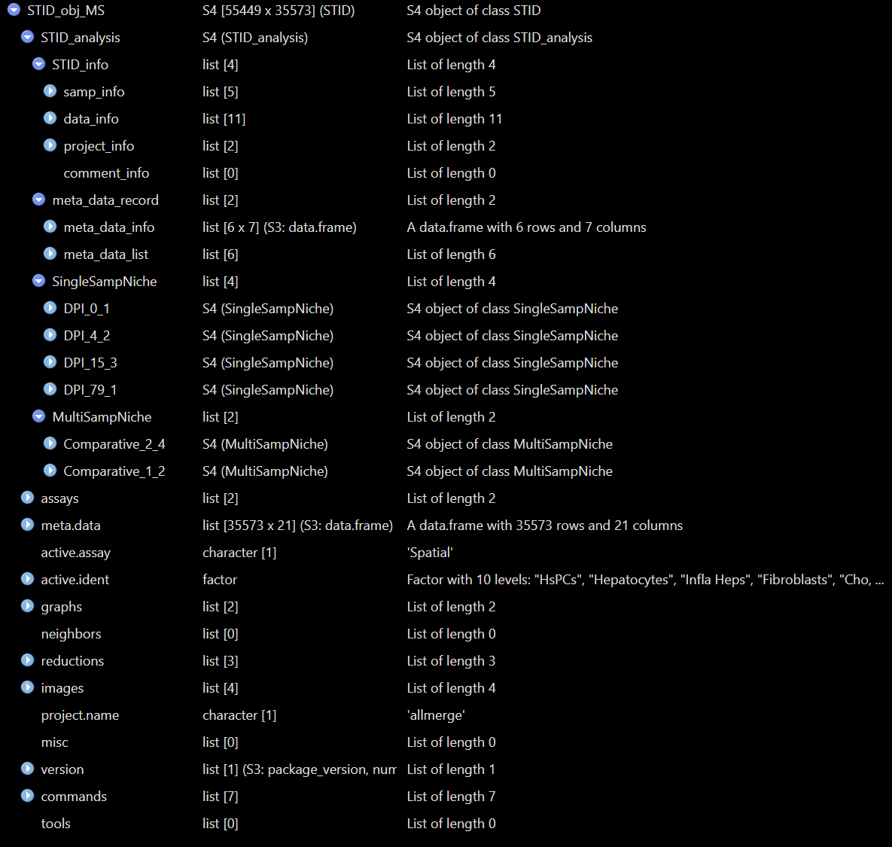
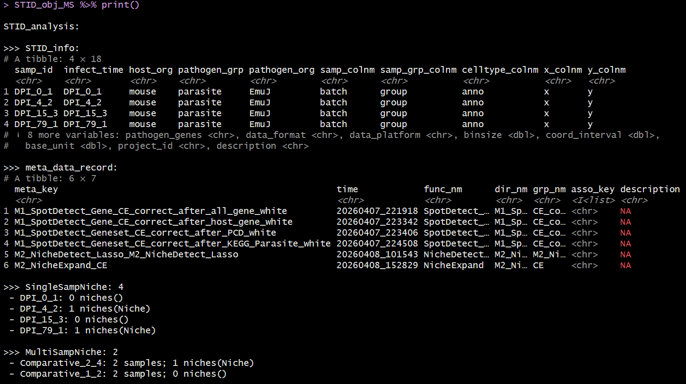
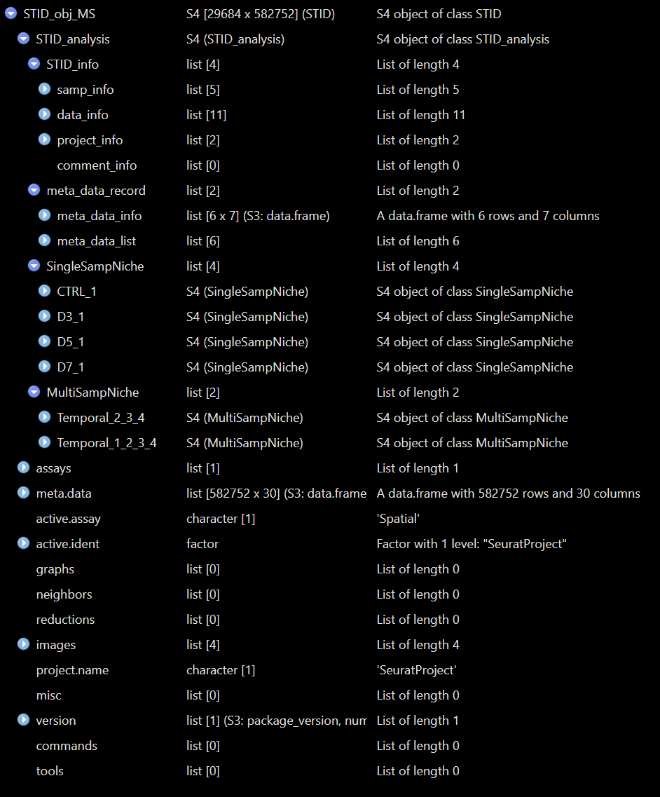
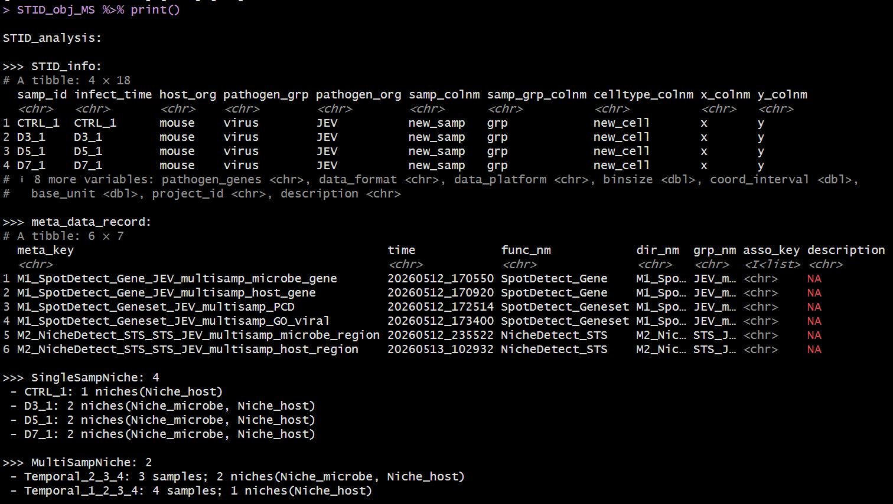

Overview
This vignette introduces the core STID object classes
and helper functions used by STID workflows. The
STID class extends a Seurat object with an
additional STID_analysis slot, so users can keep regular
Seurat assays, metadata, reductions, graphs, and images while recording
infection-specific project information, metadata records, single-sample
niche results, and multi-sample niche results.
This vignette covers:
- the relationship among
STID,STID_analysis,SingleSampNiche, andMultiSampNiche; - converting a
Seuratobject into anSTIDobject; - reading and updating project information stored in
STID_info; - adding, retrieving, and removing metadata records;
- creating and inspecting single-sample and multi-sample niche containers;
- converting an
STIDobject back to a standardSeuratobject.
Note: Before running the examples, update the input
Seuratobject, sample column, sample-group column, cell-type column, coordinate columns, pathogen-gene names, spatial platform, and metadata keys to match the dataset under analysis.

STID class data structure
Prerequisites
Most examples below use eval = FALSE because they
demonstrate object manipulation patterns. Replace placeholder object
names and column names with those used in the active project.
Class architecture
STID is an S4 class that contains Seurat.
In practice, this means an STID object can be used like a
Seurat object in many common analysis steps, while also carrying the
additional STID_analysis container used by STID-specific
workflows.
| Class | Main role | Key slots |
|---|---|---|
STID |
Seurat-derived object with infection-specific analysis storage |
STID_analysis, plus inherited Seurat slots such as
assays, meta.data, reductions,
images, graphs, and misc
|
STID_analysis |
Project-level analysis container |
STID_info, meta_data_record,
SingleSampNiche, MultiSampNiche
|
SingleSampNiche |
Niche-analysis results for one sample |
samp_info, niche_info,
niche_cells, niche_genes
|
MultiSampNiche |
Integrated niche-analysis results across samples |
samp_info, niche_info,
niche_cells, niche_genes
|
The most important storage paths are shown below.
# Project, sample, data, and comment information
STID_obj@STID_analysis@STID_info
# Registered metadata tables and their provenance records
STID_obj@STID_analysis@meta_data_record
# Single-sample niche objects, usually named by sample ID
STID_obj@STID_analysis@SingleSampNiche
# Multi-sample niche objects, usually named by multi_id
STID_obj@STID_analysis@MultiSampNiche
Structure of a real STID object - Comparative

Example output of print(STID object) - Comparative

Structure of a real STID object - Temporal

Example output of print(STID object) - Temporal
Note: Direct slot access is useful for inspection, but analysis scripts should prefer accessor and setter functions such as
GetInfo(),SetInfo(),GetMetaData(),AddMetaData(),GetSSNicheCells(), andGetMSNicheCells().
Convert a Seurat object to an STID object
as.STID() converts a Seurat object into an
STID object. The conversion stores infection-specific
information, spatial-data information, and project information in
STID_obj@STID_analysis@STID_info.
During conversion, as.STID() checks required metadata
columns, standardizes coordinate columns to x and
y, updates the Seurat object for compatibility, records
sample order, initializes empty metadata and niche containers, and
replaces underscores in gene names with hyphens.
Note:
CreateSTIDObject()is a convenience wrapper. This vignette usesas.STID()directly because it exposes the full conversion interface, includingdata_platformandbase_unit.
pathogen_genes <- grep("^Pathogen-", rownames(seurat_obj), value = TRUE)
STID_obj <- as.STID(
seurat_obj = seurat_obj,
host_org = "mouse",
pathogen_grp = "parasite",
pathogen_org = "Echinococcus_multilocularis",
samp_colnm = "batch",
samp_grp_colnm = "group",
celltype_colnm = "anno",
x_colnm = "x",
y_colnm = "y",
pathogen_genes = pathogen_genes,
data_format = "square_grid",
data_platform = "StereoSeq",
binsize = 1,
coord_interval = 1,
base_unit = 0.5,
project_id = "STID_demo",
description = "Demo project converted from a Seurat object"
)Coordinate handling
For square-grid data, the conversion checks the most common interval
between unique x and y coordinates. If the
intervals are consistent, coordinates are divided by the interval and
rounded so the stored coordinate interval becomes 1. For Visium-style
hex-grid data, coord_interval is calculated from the
spatial scale factor and base_unit.
Note: If
xandyalready exist inmeta.data, they are used directly. If they do not exist andx_colnmory_colnmis missing, STID attempts to extract coordinates from the Seurat spatial image slots. If custom coordinate column names are provided, they are renamed toxandyinside the STID object.
GetCoordInfo(STID_obj)
STID_obj@meta.data %>%
dplyr::select(batch, group, anno, x, y) %>%
head()Platform defaults
If base_unit is not supplied, as.STID()
uses platform-specific defaults when available.
data_platform |
Default base_unit
|
|---|---|
StereoSeq |
0.5 |
VisiumHD |
2 |
SlideSeq |
10 |
Visium |
65 |
Inspect and update STID information
GetInfo() retrieves one category from
STID_info. Use sub_key to retrieve selected
fields.
# Sample-level information
GetInfo(STID_obj, info_key = "samp_info")
# Selected data-structure information
GetInfo(
STID_obj,
info_key = "data_info",
sub_key = c("samp_colnm", "samp_grp_colnm", "celltype_colnm", "data_platform")
)
# Project information
GetInfo(STID_obj, info_key = "project_info")SetInfo() overwrites an existing information field.
AddInfo() appends values, and is most useful for
comment_info.
STID_obj <- SetInfo(
STID_obj,
info_key = "project_info",
sub_key = "description",
info_value = "Updated project description after preprocessing"
)
STID_obj <- AddInfo(
STID_obj,
info_key = "comment_info",
sub_key = NULL,
info_value = list(
preprocessing = "Low-quality spots were removed before STID conversion.",
coordinates = "Stereo-seq coordinates were normalized to interval 1."
)
)Manage metadata records
STID keeps two categories of metadata:
- raw cell metadata in
STID_obj@meta.data, inherited from Seurat; - analysis-specific metadata tables stored in
STID_obj@STID_analysis@meta_data_record$meta_data_list, with a corresponding provenance table inmeta_data_info.
GetMetaData() can retrieve the special keys
"raw" and "coord", or retrieve registered
metadata tables by their meta_key. It can also combine
multiple metadata sources when meta_key is supplied as a
list.
# Raw Seurat/STID metadata
raw_meta <- GetMetaData(STID_obj, meta_key = "raw")[[1]]
# Coordinate-related columns only
coord_meta <- GetMetaData(STID_obj, meta_key = "coord")[[1]]
# Combine raw metadata with a registered analysis metadata table
combined_meta <- GetMetaData(
STID_obj,
meta_key = list(c("raw", "infection_score")),
add_coord = TRUE
)[[1]]Add metadata
AddMetaData() registers a full metadata table. Row names
of the added data frame should match the cell or spot names in
STID_obj@meta.data.
infection_score <- STID_obj@meta.data %>%
rownames_to_column(var = "cell_id") %>%
mutate(
pathogen_count = Matrix::colSums(GetAssayData(STID_obj, layer = "counts")[pathogen_genes, , drop = FALSE]),
pathogen_positive = pathogen_count > 0
) %>%
dplyr::select(cell_id, pathogen_count, pathogen_positive) %>%
column_to_rownames(var = "cell_id")
STID_obj <- AddMetaData(
STID_obj = STID_obj,
meta_key = "infection_score",
add_data = infection_score,
dir_nm = "M0_Metadata",
grp_nm = "infection_score",
asso_key = "raw",
description = "Per-cell pathogen count and binary pathogen-positive label"
)
GetMetaInfo(STID_obj)Add or remove metadata columns
Use AddMetaColumn() when the goal is to append columns
to an existing metadata table. Use RemoveMetaColumn() to
remove selected columns, and RemoveMetaData() to unregister
an entire metadata table.
new_columns <- data.frame(
manual_qc_label = "pass",
row.names = rownames(STID_obj@meta.data)
)
STID_obj <- AddMetaColumn(
STID_obj = STID_obj,
meta_key = "raw",
add_data = new_columns
)
STID_obj <- RemoveMetaColumn(
STID_obj = STID_obj,
meta_key = "raw",
remove_colnm = "manual_qc_label"
)
STID_obj <- RemoveMetaData(
STID_obj = STID_obj,
meta_key = "infection_score"
)Create a SingleSampNiche object
CreateSingleSampNiche() converts niche-detection
metadata into one SingleSampNiche object per sample. Each
sample-level object stores niche_info,
niche_cells, and niche_genes for one or more
niche_key values.
For ROI_type = "ROI" or ROI_type = "Spot",
center, edge, all-region label, and distance-to-center columns should be
supplied. Additional metadata columns can be added to
niche_cells by using other_colnm during
construction or AddSSNicheCells() after construction.
Note: Update
expanded_niche_key, ROI columns, negative label, sample IDs, and annotation columns according to the output of the infection-associated niche-identification workflow.
niche_key <- "Niche"
expanded_niche_key <- "M2_NicheExpand_CE"
STID_obj_SS <- CreateSingleSampNiche(
STID_obj = STID_obj,
loop_id = "LoopAllSamp",
niche_key = niche_key,
meta_key = expanded_niche_key,
ROI_type = "ROI",
pos_colnm = "ROI_label",
neg_value = "neg",
center_colnm = "ROI_center",
edge_colnm = "ROI_edge",
all_label_colnm = "All_ROI_label",
all_dist_colnm = "All_Dist2ROIcenter",
other_colnm = c("anno"),
description = "Expanded infection-associated niche regions"
)Retrieve single-sample niche data
The single-sample getter functions return lists named by sample ID.
ss_info <- GetSSNicheInfo(
STID_obj = STID_obj_SS,
loop_id = "LoopAllSamp",
niche_key = niche_key
)
ss_cells <- GetSSNicheCells(
STID_obj = STID_obj_SS,
loop_id = "LoopAllSamp",
niche_key = niche_key
)
ss_genes <- GetSSNicheGenes(
STID_obj = STID_obj_SS,
loop_id = "LoopAllSamp",
niche_key = niche_key
)Add annotations to single-sample niche data
AddSSNicheCells() appends selected metadata columns to
niche_cells. AddSSNicheGenes() appends a
gene-level annotation column to niche_genes.
STID_obj_SS <- AddSSNicheCells(
STID_obj = STID_obj_SS,
loop_id = "LoopAllSamp",
meta_key = "raw",
select_colnm = c("anno", "group"),
niche_key = niche_key
)
STID_obj_SS <- AddSSNicheGenes(
STID_obj = STID_obj_SS,
gene = pathogen_genes,
label = rep("pathogen_gene", length(pathogen_genes)),
add_colnm = "gene_source",
loop_id = "LoopAllSamp",
niche_key = niche_key
)Create a MultiSampNiche object
CreateMultiSampNiche() combines a shared
niche_key across selected samples. It requires existing
SingleSampNiche entries and uses the sample-group column
recorded in data_info.
compare_mode can be:
-
"Comparative": designed for two-group comparisons; the first group order is treated as the control group in downstream comparative workflows; -
"Temporal": designed for ordered multi-time or multi-stage samples.
STID_obj_MS <- CreateMultiSampNiche(
STID_obj = STID_obj_SS,
multi_id = "infected_vs_control",
loop_id = c("Control_1", "Control_2", "DPI_4_1", "DPI_4_2"),
compare_mode = "Comparative",
niche_key = niche_key,
description = "Compare infection-associated niches between control and infected samples"
)Retrieve multi-sample niche data
The multi-sample getter functions return lists named by
multi_id.
ms_info <- GetMSNicheInfo(
STID_obj = STID_obj_MS,
loop_id = "LoopAllMulti",
niche_key = niche_key
)
ms_cells <- GetMSNicheCells(
STID_obj = STID_obj_MS,
loop_id = "LoopAllMulti",
niche_key = niche_key
)
ms_genes <- GetMSNicheGenes(
STID_obj = STID_obj_MS,
loop_id = "LoopAllMulti",
niche_key = niche_key
)Add annotations to multi-sample niche cells
AddMSNicheCells() appends selected metadata columns to
each multi-sample niche_cells table.
STID_obj_MS <- AddMSNicheCells(
STID_obj = STID_obj_MS,
loop_id = "LoopAllMulti",
meta_key = "raw",
select_colnm = c("anno", "group"),
niche_key = niche_key
)Convert STID back to Seurat
as.Seurat.STID() removes the STID-specific
STID_analysis slot and returns a standard
Seurat object containing the inherited Seurat
components.
seurat_from_stid <- as.Seurat.STID(STID_obj_MS)Inspect object summaries
The show method displays the regular Seurat summary
followed by STID-specific information such as sample IDs, coordinate
columns, metadata keys, and the number of single-sample and multi-sample
niche containers. The print() method provides a more
detailed STID-specific summary.
STID_obj_MS
print(STID_obj_MS)Recommended object-management pattern
A typical analysis keeps separate object names for each major stage, which makes it easier to reproduce earlier steps or compare alternative parameters.
# 1. Convert from Seurat
STID_obj <- as.STID(seurat_obj = seurat_obj, ...)
# 2. Add metadata produced by spot detection, niche detection, or manual annotation
STID_obj <- AddMetaData(STID_obj, meta_key = "infection_score", add_data = infection_score)
# 3. Construct single-sample niche containers
STID_obj_SS <- CreateSingleSampNiche(STID_obj, niche_key = "Niche", meta_key = "M2_NicheExpand_CE", ...)
# 4. Add extra niche-level annotations
STID_obj_SS <- AddSSNicheCells(STID_obj_SS, meta_key = "raw", select_colnm = "anno", niche_key = "Niche")
# 5. Combine samples for multi-sample analyses
STID_obj_MS <- CreateMultiSampNiche(STID_obj_SS, compare_mode = "Comparative", niche_key = "Niche", ...)Notes
- Confirm that
samp_colnm,samp_grp_colnm, coordinate columns, and optionalcelltype_colnmexist before conversion. - Use consistent sample IDs and sample-group labels;
CreateMultiSampNiche()relies on the sample order recorded inSTID_info. - Keep row names synchronized when adding metadata. Added metadata
tables should use the same cell or spot IDs as
STID_obj@meta.data. - Use unique and descriptive
meta_key,niche_key, andmulti_idvalues. Existing keys may be overwritten by setter functions. - For ROI- or spot-based niches, verify that positive-label,
center-label, edge-label, all-label, and distance columns are present
before creating
SingleSampNicheobjects. - Prefer accessors and update functions over direct slot mutation in analysis notebooks.
- Convert back to
Seuratonly when STID-specific containers are no longer needed.
Session information
sessionInfo()
#> R version 4.2.0 (2022-04-22 ucrt)
#> Platform: x86_64-w64-mingw32/x64 (64-bit)
#> Running under: Windows 10 x64 (build 22000)
#>
#> Matrix products: default
#>
#> locale:
#> [1] LC_COLLATE=Chinese (Simplified)_China.utf8
#> [2] LC_CTYPE=Chinese (Simplified)_China.utf8
#> [3] LC_MONETARY=Chinese (Simplified)_China.utf8
#> [4] LC_NUMERIC=C
#> [5] LC_TIME=Chinese (Simplified)_China.utf8
#>
#> attached base packages:
#> [1] stats graphics grDevices utils datasets methods base
#>
#> loaded via a namespace (and not attached):
#> [1] digest_0.6.35 R6_2.6.1 jsonlite_1.8.8 lifecycle_1.0.5
#> [5] evaluate_1.0.1 cachem_1.1.0 rlang_1.1.7 cli_3.6.5
#> [9] rstudioapi_0.15.0 fs_1.6.3 jquerylib_0.1.4 bslib_0.8.0
#> [13] ragg_1.3.0 rmarkdown_2.29 pkgdown_2.2.0 textshaping_0.3.6
#> [17] desc_1.4.3 tools_4.2.0 htmlwidgets_1.6.4 yaml_2.3.10
#> [21] xfun_0.49 fastmap_1.2.0 compiler_4.2.0 systemfonts_1.0.4
#> [25] htmltools_0.5.8.1 knitr_1.49 sass_0.4.9